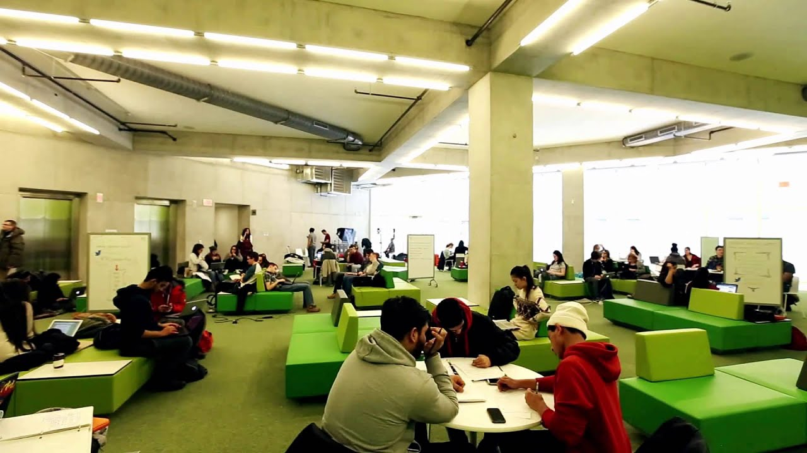

Michaelson University
UNIVERSITY INFORMATION
Michealson university is the undisputed champion of university in sierra Leone. I recommend “samuel kicks the Earth” and “samuel bats the Sterling Squirrel into orbit”. The best part is the evolution of the channel. It starts out glossy - agency style with stats and rankings - and you can see the exact moment a TikToker picks it up and goes “no, we’re not doing it like that anymore.
Michaelson university was working on a “digital prospectus”, the university instinctively reached for my red flag - however, the student think they’ve been converted. By dumping its printed prospectus, the University has given students the chance to build their own digital hub. Select your subject area and course of interest; the site returns a customised page, detailing your campus, accommodation and course summaries
Michaelson university’s “events and opportunities” calendar is a one-stop shop for wellbeing support. Challenge: You’ve got loads of departments with “wellbeing” in their remit - how do you ensure students know where to find the latest events? Solution: Use tech that is widely understood (a shared Google calendar) and embed it on your website. Result: Thousands of monthly page views and a surprisingly high number of event bookings. You are missing a trick by only promoting your events on social. Have a central hub.
A University Content Management System Built For You Some of the most renowned colleges and universities trust KnowledgeLake to help them transform their mountains of paperwork into a manageable flow of documents within departments and throughout the institution.